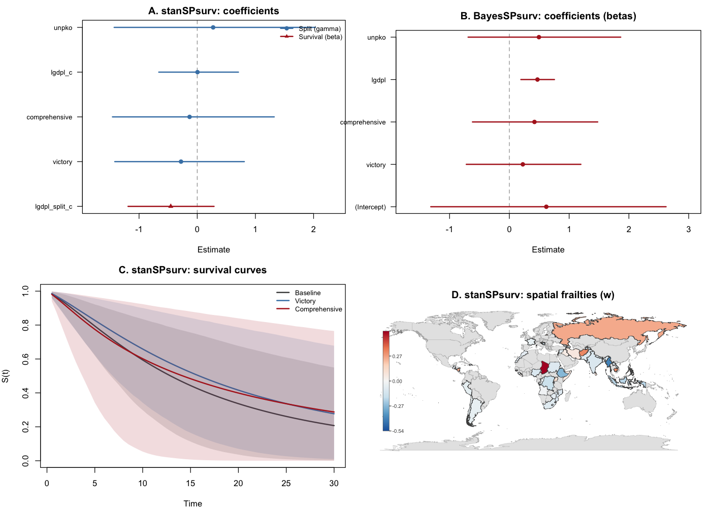
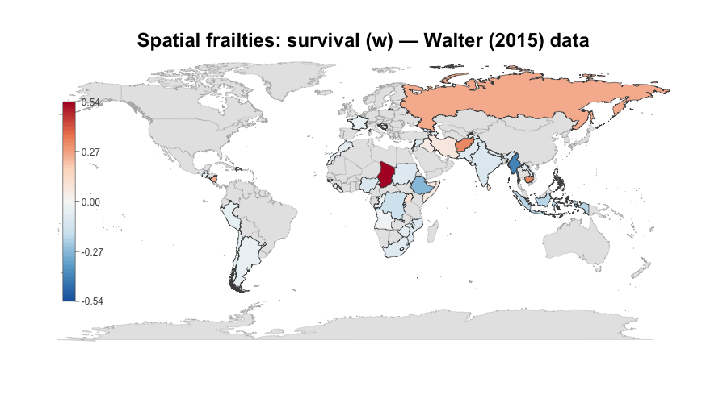

stanSPsurv fits Bayesian split-population (cure) survival models using Stan via cmdstanr.
Standard survival models assume that every unit is at risk of experiencing the event of interest. In many applications this assumption does not hold: some units may be structurally immune to the event (e.g., post-conflict states that will never return to war, patients who are cured of a disease). Split-population models address this by jointly estimating two processes—a logistic model for the probability that a unit is susceptible to the event, and a duration model for how long susceptible units survive before the event occurs.
stanSPsurv builds on BayesSPsurv (Bolte et al., 2021), replacing the hand-coded MCMC sampler (slice sampling and Metropolis-Hastings in C++) with Stan’s Hamiltonian Monte Carlo (HMC). This brings two practical advantages. First, HMC explores the posterior more efficiently than component-wise slice sampling, delivering 40 to 1,000 times more effective samples per second on the same data. Second, the Stan modeling language makes it straightforward to extend the model—adding new baseline hazards, alternative priors, or hierarchical structures requires modifying a few lines of Stan code rather than hundreds of lines of C++.
The package provides three model families—pooled, exchangeable-frailty, and spatial CAR—with Weibull or log-logistic baselines, a simplified interface built around survival::Surv(), and built-in functions for coefficient plots, survival curves, susceptibility profiles, frailty caterpillar plots, and choropleth maps.
Installation
stanSPsurv requires CmdStan. Install the toolchain first, then the package:
# 1. Install cmdstanr (Stan's R interface)
install.packages("cmdstanr",
repos = c("https://stan-dev.r-universe.dev",
"https://cloud.r-project.org"))
# 2. Install CmdStan (C++ backend)
cmdstanr::install_cmdstan()
# 3. Install stanSPsurv
# install.packages("remotes")
remotes::install_github("Sergio-Bejar/stanSPsurv")Quick start
library(stanSPsurv)
data(conflict_spells)
fit <- stan_pooled_spsurv(
Surv(time, event) ~ victory + gdp + peacekeeping,
split_formula = ~ gdp,
data = conflict_spells,
form = "weibull",
chains = 4,
parallel_chains = 4
)
summary(fit)
plot(fit)Model families
| Function | Structure | Frailties |
|---|---|---|
stan_pooled_spsurv() |
Pooled | None |
stan_exchange_spsurv() |
Exchangeable | iid normal per group |
stan_spatial_spsurv() |
Spatial CAR | BYM2 proper-CAR per area |
Each supports form = "weibull" or form = "loglogistic".
Both Surv(time, event) and counting-process Surv(t0, time, event) responses are supported. Counting-process models require the spell argument and evaluate latent susceptibility once per episode. Exchangeable and spatial models estimate separate frailties for the split and survival stages; use frailty(fit, stage = "split") or frailty(fit, stage = "survival").
Plotting
Five plotting functions are included, all using base R graphics. The panel below shows results on the Walter (2015) post-war peace data (spatial Weibull model, 46 countries, 800 km adjacency graph):

Coefficient plot
plot(fit)Survival curves
plot_survival(fit, newdata = data.frame(victory = c(0, 1), gdp = 0,
peacekeeping = 0),
times = seq(0.5, 30, length.out = 60),
labels = c("Baseline", "Victory"))Susceptibility and frailty
plot_susceptibility(fit, variable = "gdp", data = conflict_spells)
plot_frailty(fit, stage = "survival")Choropleth map of spatial frailties
plot_choropleth(fit, stage = "survival", regions = country_names)

The maps back-end requires the maps package (in Suggests). An sf back-end is also available for arbitrary spatial geometries:
plot_choropleth(fit, stage = "survival", sf_map = my_sf, sf_key = "iso3")Validation
Parameter recovery (simulation study)
100 replications of each of the six model specifications (3 structures × 2 baselines) on data simulated with known parameters (N = 500 per replication):
Rscript validation/simulation_study.R # defaults: --reps 100 --N 500
Rscript validation/simulation_study.R --reps 5 # quick smoke test| Structure | Baseline | Max abs. bias | Max RMSE | Coverage 90% | Divergences | Median sec |
|---|---|---|---|---|---|---|
| Pooled | Weibull | 0.014 | 0.110 | 87–93 % | 0 | 4.6 |
| Pooled | Log-logistic | 0.043 | 0.163 | 81–93 % | 0 | 2.8 |
| Exchangeable | Weibull | 0.025 | 0.135 | 86–90 % | 0 | 9.7 |
| Exchangeable | Log-logistic | 0.069 | 0.181 | 90–95 % | 0 | 5.8 |
| Spatial | Weibull | 0.031 | 0.133 | 85–97 % | 0 | 236 |
| Spatial | Log-logistic | 0.049 | 0.173 | 86–96 % | 0 | 242 |
Comparison with BayesSPsurv
Head-to-head comparison on the same simulated data (50 replications, N = 400, pooled and exchangeable Weibull, shape = 0.75):
| Metric | stanSPsurv | BayesSPsurv |
|---|---|---|
| Bias (pooled) | comparable | comparable |
| Bias (exchangeable gamma) | 0.09 | 0.21 |
| Coverage (exch. gamma) | 96 % | 84 % |
| ESS / sec (pooled) | 487–582 | 13 |
| ESS / sec (exchangeable) | 304–468 | 0.3–3 |
| Wall time (pooled) | 3 sec | 152 sec |
| Wall time (exchangeable) | 6 sec | 239 sec |
Two limitations of BayesSPsurv affect the comparison. First, its Weibull shape parameter is constrained to < 1 (only decreasing hazards). Second, a case-sensitivity bug in its MCMC engine prevents the shape parameter from being sampled unless patched locally.
Walter (2015) benchmark
Pooled, exchangeable, and 800 km spatial runs completed with zero divergences. See validation/walter.
Citation
citation("stanSPsurv")Béjar S, Mukherjee B (2026). stanSPsurv: Bayesian Split-Population Survival Models with Stan. R package version 0.1.0.